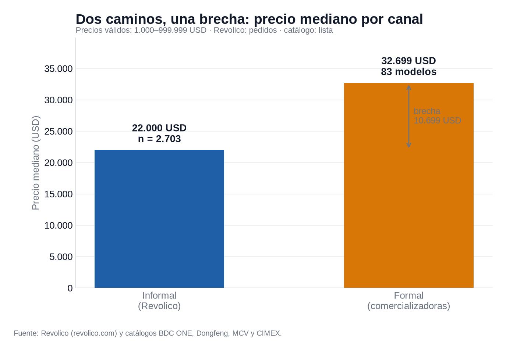
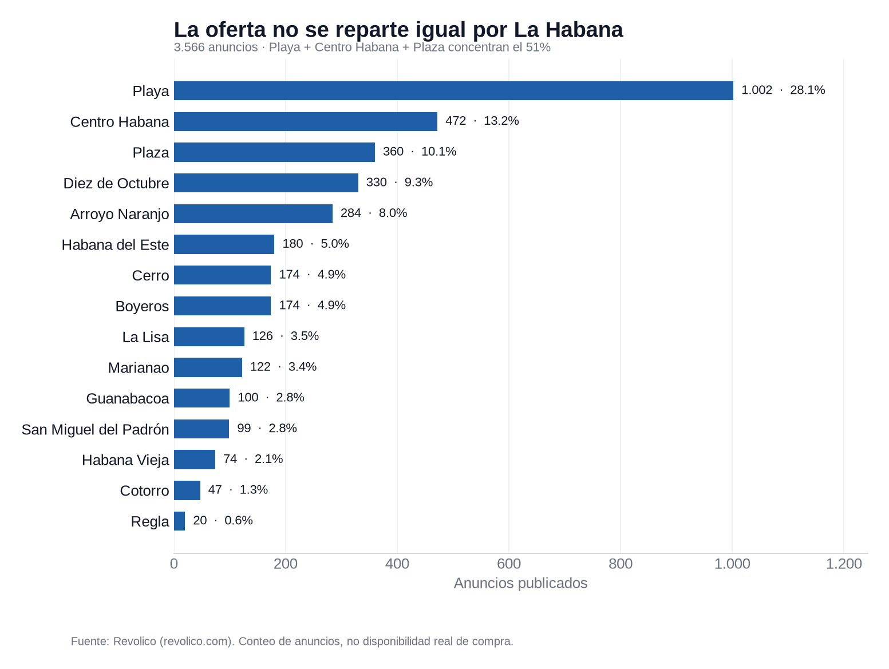
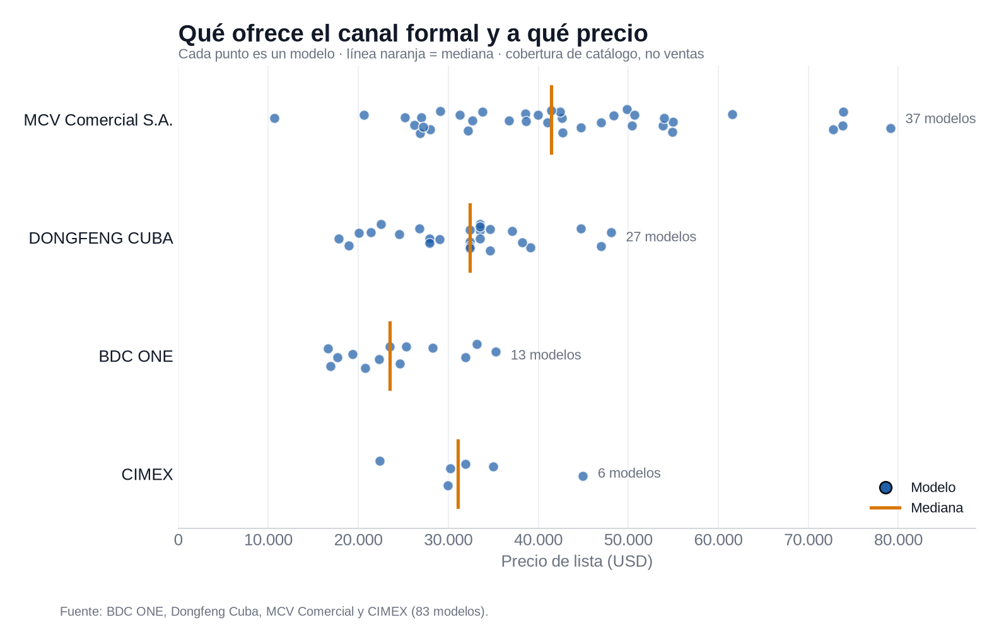
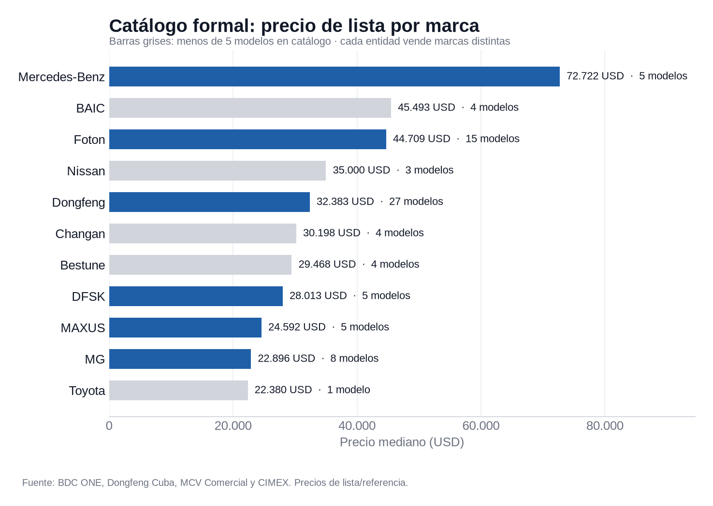
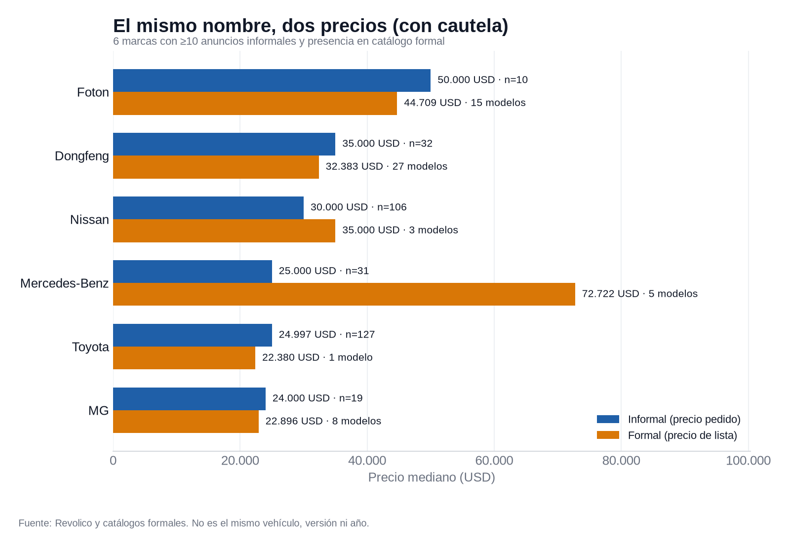
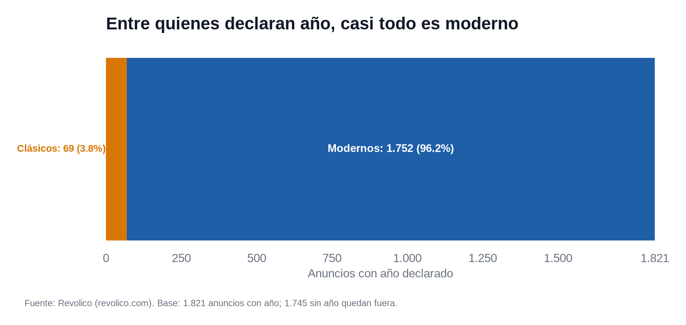

Camino informal
Revolico
Precios pedidos, no de cierre. Usados, nuevos y ofertas mezcladas, con información incompleta.
3.566 anuncios · 2.703 con precio válido
Ciencia de Datos · Universidad de La Habana · 2026
El catálogo formal y los precios pedidos en Revolico cuentan dos historias distintas. Esta página las pone lado a lado, con datos reales y sus límites a la vista.
Camino informal
Precios pedidos, no de cierre. Usados, nuevos y ofertas mezcladas, con información incompleta.
3.566 anuncios · 2.703 con precio válido
Camino formal
Precios de lista. Catálogo pequeño, modelos nuevos y una canasta distinta en cada entidad.
83 modelos · 4 entidades · 11 marcas
No se inventan datos: lo que falta queda como ausente y se excluye del cálculo correspondiente. Cada bloque declara su fuente, sus datos y sus sesgos.
01
Depende de por dónde entres. El catálogo formal y Revolico no venden lo mismo, ni al mismo precio, ni con la misma información.
Si estás pensando en comprar un carro en La Habana, te enfrentas a dos mapas. En el catálogo formal ves precios de lista, modelos nuevos y una oferta pequeña. En Revolico ves lo que la gente pide por autos usados —y no tan usados—, con datos incompletos y márgenes de negociación que no aparecen en el anuncio.
La mediana del mercado informal es 22.000 USD; la del formal, 32.699 USD. La diferencia es real en los datos, pero no significa que el mismo carro cueste distinto: son canales, productos y momentos diferentes.

Prueba tú
Mueve el control y mira qué parte del mercado informal queda a tu alcance, qué marcas aparecen y cuántos modelos formales entran.
45,2 % de los anuncios con precio válido
1.223 anuncios informales dentro del presupuesto.
7
modelos de catálogo dentro del presupuesto, de 83
Base: 2.703 anuncios con precio válido (1.000–999.999 USD). Los anuncios sin precio y los precios marcador no entran en el porcentaje.
02
La brecha de 10.699 USD sobrevive a la limpieza de precios marcador. También sobrevive la advertencia: no son el mismo producto.
Antes de comparar, limpiamos. Se excluyeron 584 anuncios con precio no válido (581 por debajo de 1.000 USD y 3 por encima de 999.999) y 279 sin precio. Quedan 2.703 anuncios informales y 83 modelos formales.
La mediana informal es 22.000 USD y la formal 32.699 USD: una brecha de 10.699 USD. La media recortada al 10% informal es 22.196 USD, casi igual a la mediana, así que la cola de precios extremos no mueve el centro.
Explora la distribución
La mediana es solo un punto. Elige un percentil para ver cuánto queda por debajo en cada canal y cómo cambia la brecha en las colas.
Informal · Revolico
22.000 USD
50 % de los 2.703 anuncios con precio válido está por debajo.
Formal · catálogo
32.699 USD
50 % de los 83 modelos está por debajo.
Brecha en P50: 10.699 USD
Los percentiles describen precios pedidos (informal) y precios de lista (formal). No son precios de cierre ni volumen de ventas: el catálogo no permite estimar cuántos autos se venden.
03
La oferta no se reparte igual por La Habana. Tres municipios concentran más de la mitad de los anuncios.
Playa concentra 1.002 de 3.566 anuncios (28,1%). Playa y Centro Habana suman 41,4%; con Plaza, 51,4%. En el otro extremo, Regla registra 20 anuncios y Cotorro 47.
Esa concentración es una pista sobre dónde se publica, no necesariamente sobre dónde hay más autos disponibles para comprar.

Curva de concentración
Ordena los municipios por volumen y suma los primeros. Con pocos se llega a la mitad de los anuncios; el resto queda en la cola.
51,4 % de los anuncios
1.834 anuncios en 3 municipios.
Playa · Centro Habana · Plaza
La curva no dice dónde hay más autos: dice dónde se publica más. Dos anuncios no declaran municipio y quedan fuera de la curva.
04
Entre los municipios con al menos 30 precios válidos, la mediana de los precios pedidos va de 13.000 a 28.000 USD.
Entre los municipios con al menos 30 precios válidos, la mediana va de 13.000 USD (La Lisa, n=96) a 28.000 USD (Arroyo Naranjo, n=223): poco más del doble. Marianao queda en 16.000 USD (n=81). Regla queda fuera del ranking por n<30.
La diferencia puede reflejar el mix de marcas, modelos, años y estado de los autos de cada municipio, no solo la ubicación.

Misma marca, distinto municipio
Elige una marca y un municipio. Compara la mediana local con la mediana de esa misma marca en toda La Habana.
28.250 USD en el municipio
Mediana de Hyundai en Playa: 210 anuncios.
En toda La Habana: 29.000 USD (713 anuncios). Diferencia: −750 USD.
La diferencia es descriptiva: no controla año, modelo, versión ni estado. Si la celda tiene pocos anuncios, se marca como muestra baja.
05
Hyundai lidera las publicaciones. Entre las marcas con al menos 30 anuncios, BMW tiene la mediana más alta.
Hyundai reúne 872 anuncios, el 24,5% de 3.566. Le siguen Kia (220), Lada (192), Toyota (148) y Nissan (115). Pero 1.110 anuncios (31,1%) no declaran marca y quedan fuera de cualquier análisis por marca.
Entre las marcas con n≥30, las medianas más altas son BMW (46.000 USD, n=33), Dongfeng (35.000, n=32) y Honda (32.250, n=74); las más bajas, Fiat (5.500, n=51), Lada (6.500, n=161) y Volkswagen (8.950, n=76). Foton aparece con 50.000 USD, pero solo n=10: no se usa para ordenar.


Compara dos marcas
Elige dos marcas con al menos 30 anuncios. La banda va del P25 al P75; el punto marca la mediana. Dos marcas pueden tener la misma mediana y dispersiones muy distintas.
P25 31.000 · Mediana 46.000 · P75 85.000
P25 5.000 · Mediana 6.500 · P75 7.500
Diferencia de medianas: 39.500 USD
El rango describe el 50% central de los precios pedidos. Un rango ancho indica más heterogeneidad dentro de la marca.
06
83 modelos, 4 entidades y 11 marcas. Los precios de lista van de 10.645 a 79.125 USD.
El catálogo formal reúne 83 modelos de 4 entidades y 11 marcas. Los precios van de 10.645 USD (Bestune Pony) a 79.125 USD (Mercedes-Benz GLC Coupé). Mercedes-Benz tiene una mediana de 72.722 USD sobre 5 modelos de catálogo: es una referencia de lista, no una estimación de ventas.
Las entidades no se ordenan por precio porque venden canastas distintas: BDC ONE ofrece MG y Maxus; Dongfeng vende Dongfeng; MCV comercializa Mercedes-Benz, Changan, BAIC, Foton, DFSK y Bestune; CIMEX, Nissan y Toyota. Comparar sus medianas sería comparar productos diferentes.


Catálogo completo
Busca por marca, modelo o entidad. Ordena por precio si quieres ver los extremos.
83 modelos
| Entidad | Marca | Modelo | Clase | Propulsión | Precio USD |
|---|
“Microbús” y “Pickup” no se tratan como marcas en los gráficos por marca. Los precios son de lista o referencia, no de cierre.
07
Seis marcas cumplen el mínimo para comparar. El catálogo formal no es una muestra: es la lista de modelos publicados, y su cobertura varía.
Seis marcas tienen al menos 10 anuncios informales y presencia en el catálogo formal: Dongfeng, Foton, Mercedes-Benz, MG, Nissan y Toyota. El catálogo no se trata como muestra: es la lista de precios de cada entidad y no permite estimar ventas. Lo que sí varía es la cobertura: Toyota tiene 1 modelo en catálogo, Nissan 3, Mercedes-Benz 5, MG 8, Foton 15 y Dongfeng 27.
La dirección de la brecha no es uniforme. El informal pide más en Dongfeng (35.000 vs 32.383 USD), Foton (50.000 vs 44.709), MG (24.000 vs 22.896) y Toyota (24.997 vs 22.380). El formal es más caro en Nissan (35.000 vs 30.000) y Mercedes-Benz (72.722 vs 25.000). Esta última brecha refleja, sobre todo, que el catálogo de Mercedes-Benz es de autos nuevos de gama alta, no una estimación de ventas.

¿Se pueden comparar?
Elige una marca. La herramienta dice si hay anuncios informales suficientes y si la marca está en el catálogo formal. No usa el catálogo como muestra.
Comparable: hay anuncios informales suficientes y catálogo formal.
Informal
35.000 USD
32 anuncios
Catálogo formal
32.383 USD
27 modelos
Diferencia: 2.617 USD · el informal pide más.
“Comparable” exige al menos 10 anuncios informales y presencia en el catálogo. El número de modelos mide cobertura del catálogo, no cantidad de autos vendidos.
08
Casi la mitad de los anuncios no declara el año. Entre los que sí, el 96% son modernos.
De 3.566 anuncios, 1.821 declaran año. De ellos, 69 son clásicos (<2000) y 1.752 modernos (≥2000): el 3,8% frente al 96,2%. Pero 1.745 anuncios (48,9%) no declaran año, así que la composición real del parque ofertado es una incógnita.
Este dato es clave para leer cualquier precio: si no sabes el año, no sabes del todo qué estás comparando.


Explora por década
Elige una década. La mediana de los precios pedidos sube con los años, pero también cambia la cantidad de anuncios y la dispersión.
33.000 USD de mediana
932 anuncios con precio válido · 2020 · .
P25–P75: 25.000–39.000 USD
Los anuncios sin año no se imputan. Su mediana es 11.000 USD, frente a 26.000 USD de los que sí declaran año: el dato faltante no es aleatorio.
09
Comprar el carro es solo el primer gasto. Treinta entrevistas muestran una realidad repetida: mantenerlo cuesta, y cuesta de formas muy distintas.
Para entender qué viene después de la compra, reunimos 30 entrevistas procesadas (resúmenes, no transcripciones textuales) con propietarios que usan sus vehículos para fines personales, trabajo o carga en La Habana. Sus respuestas no describen a “todos” los dueños de autos, pero sí muestran una realidad repetida.
Entre quienes declararon precio, el litro se movió generalmente entre 2,00 y 2,80 USD, con menciones a CUPET, Mipymes y compras “por la calle”. El consumo mensual también varió mucho: hubo quienes reportaron 20–25 litros al mes, otros 50–100 litros, y casos de uso intensivo como 100–120, 100–130 o 130–160 litros mensuales. En un caso (camión Chevrolet 1954, carga), el consumo se describió en 2,2 km por litro y rangos diarios de 40 a 100–200 litros. Algunos entrevistados no declararon fuente o precio.
Al pedir un estimado anual, aparecieron respuestas muy dispares: desde 200 USD, 200–300 USD, 200–400 USD, 300–500 USD o 400–800 USD, hasta 1.000–2.000 USD y 2.000–3.000 USD en varios casos. También hubo quien no pudo dar una cifra y la describió como “bastante elevada”, y otro caso mencionó 15k, 20k, 30k CUP (equivalentes declarados: 19, 25, 38 USD con tasa 788 CUP = 1 USD). La lección es clara: el costo anual depende del vehículo, el uso, la disponibilidad de piezas y la magnitud de las averías.
La dificultad se calificó con frecuencia como alta, compleja o asociada a precios elevados (en pocos casos se matizó: “baja, pero precios elevados” o “hay piezas pero caras”). Las fuentes mencionadas incluyen Mipymes, importadoras, internet, redes sociales y páginas de Facebook, contactos que importan, encargos al exterior y, en algunos casos, agencias o talleres. Esto sugiere que el mantenimiento no depende solo del taller: depende de encontrar la pieza.
La mayoría respondió “ninguno”; de forma puntual se mencionaron neumáticos (60–80 USD) y baterías (300 USD). Aun así, la ausencia de declaración no significa ausencia de gasto: solo refleja lo reportado en estas entrevistas.
10
Seis preguntas que estos datos convierten en acciones concretas. Marca las que ya resolviste.
0 de 6 marcados
11
“Si ves una cifra sin contexto, desconfía.”